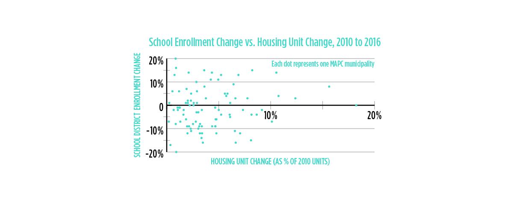
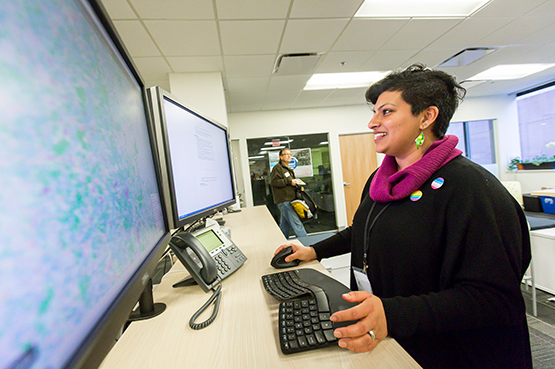
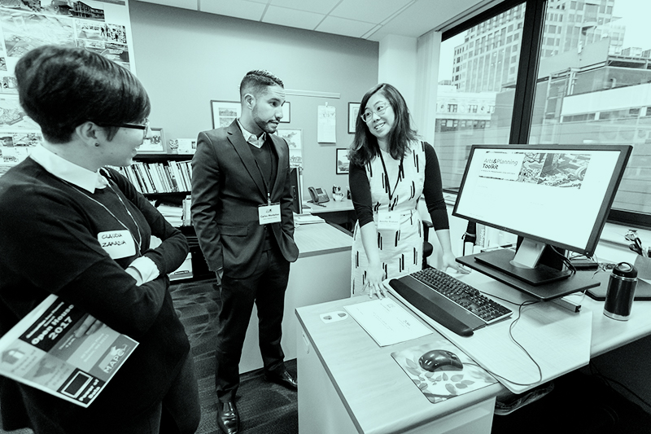
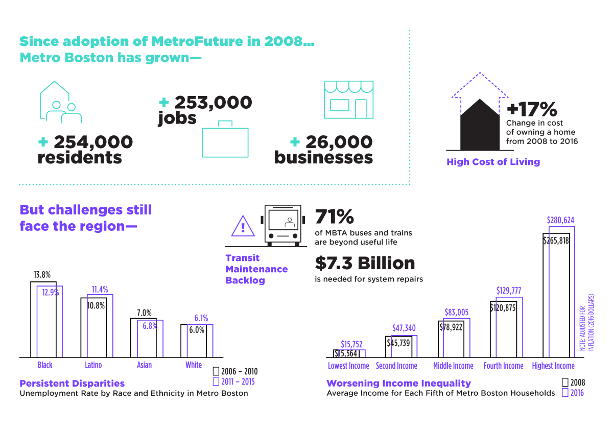

Ten years ago when we adopted our new regional plan, MetroFuture, we knew Greater Boston was a region on the move, but we couldn’t have known how far-reaching the effects of a changing economy, housing market and political landscape would be on our region and state. With instability at the federal level, a growing affordability crisis locally, and an ever-more-pressing need to confront the effects of climate change, the challenges facing our region are very real and evolving day to day. We at MAPC choose to view this through a lens of opportunity and we know that we have passionate, committed and engaged residents who are eager to make their voices heard and collaborate on building a better region together.
As dedicated as ever to our four strategic goals—advancing equity, climate change preparedness, municipal collaboration and efficiency, and smart growth—MAPC is about to embark upon an update to our visionary regional plan, and we want all of you to be part of the process. The update to MetroFuture will include topics that reflect MAPC’s own growth during the past decade, incorporating five new disciplines: clean energy, public health, community engagement, digital services, and arts and culture. It will also reflect the breadth and interconnectedness of our region and our region’s residents, capitalizing on some of our greatest assets, such as our strong educational and health sectors, a spirit of innovation, and a commitment to collaborating across the artificial lines of politics and party. Most importantly, our planning process will place particular emphasis on dissolving and combating the patterns of racism, segregation by race, ethnicity and income, and inequitable access to opportunity that have held us back from achieving our goals in the past.
We hope you will join us on our mission to create a more just, equitable and future-focused region. Visit our redesigned, newly-accessible website at mapc.org, and be a part of the conversation on Twitter @MAPCMetroBoston. Join us!
MAPC, the regional planning agency for Greater Boston, helps build equity, opportunity, and livable, vibrant places for more than 3 million residents living and working in 101 cities and towns across Eastern Massachusetts. Guided by our regional plan, MetroFuture, and in concert with our own strategic goals, we strive to be a nimble and innovative public agency that provides core planning support to our member communities while also staying abreast of new trends in housing, transportation, public health, safety, clean energy and more. This year, we’ve placed special emphasis on examining the effects of new technologies and public policy on inequality in our region, and on providing research, digital tools, and recommendations for ensuring equitable access to jobs, housing and a healthy environment for all residents of our region.
In that vein, we have a new practice area looking at the implications of emerging vehicle technologies such as self-driving cars on the region. At our fall Council Meeting in Quincy, we offered a speaking panel on innovative mobility, including electric and autonomous vehicles, and attendees were even able to test-drive all-electric and hybrid vehicles from several manufacturers, as well as a selection of e-bikes. More than 50 people participated in the “ride and drive” event, and a post-event survey showed 88% who test drove a vehicle said they would consider purchasing electric. At least one member of our staff, as well as her mother, actually did so!
Working with Transportation for Massachusetts (T4MA), we are also working to develop principles around data-sharing for autonomous vehicles to ensure policy goals are met, privacy is protected, and the state’s transportation network can be safely improved. MAPC recognizes the transformative benefits that autonomous vehicles can have for our state’s economy, environment, and quality of life, as well as the challenges that could result from disruption to existing forms of mobility. Autonomous vehicles will affect not only our transportation system, but also our economy, safety, workforce, environment, land use, and energy use. Learn more about our work in this arena at mapc.org/transportation.
In 2017, we launched a special study of the ridership habits of Uber and Lyft customers, and at year end we are crunching that data to determine what effects these companies are having (if any) on transit use—with the goal of helping both the MBTA and area communities to plan better for the transit and transportation needs of local residents and commuters. Look for more information on that research soon at mapc.org.
Parking planning remains an issue of critical importance to our communities. In December of 2017, Boston and the MBTA piloted an exclusive bus lane on Washington Street between Roslindale Square and Forest Hills, building on an earlier pilot project that utilized dedicated bus lanes on Broadway in Everett to alleviate traffic and speed up bus times. Both projects used an MAPC parking analysis to convert car spaces into a devoted bus lane. The Everett project was so popular with commuters across all modes that the model became permanent! At year end, Boston and the MBTA are considering starting a second, longer pilot in Roslindale with ongoing support from MAPC, to determine whether it’s feasible to make this dedicated bus lane a permanent change to ease congestion and commute times along the Washington Street corridor.
This year, MAPC has also begun working with several communities near Boston to explore no-cost, dockless bike share services. Several cities in our Inner Core, including Chelsea, Malden and Revere, underwent pilot programs to try these dock-free bike share systems in the fall of 2017; come spring of 2018, a regional program procured by MAPC will be rolling out across Greater Boston, giving more people in more communities access to low-cost bicycling opportunities. Dockless bike share systems offer bicycles with self-locking mechanisms that unlock with a mobile app. Rather than relying on docking stations, these bikes can be parked on the sidewalk, at bike racks, or in almost any publicly-accessible place, where the next user can pick it up, typically paying about one dollar per ride. MAPC, through a regional RFP being offered at the end of 2017, will help to create a boundary-less, regional system with multiple bike share companies that local governments can join at low or no cost, launching just in time for warmer weather.
In partnership with DHCD and Massachusetts APA, MAPC has offered a series of workshops on parking benefit districts, or PBDs, this year. A PBD is a specific geography in which parking revenue is raised then invested back into that same district, for transportation improvements. We are formulating case studies and best practices now with the goal of helping more communities adopt these districts in the years ahead.
Equitable Transit-Oriented Development, or ETOD, is another growth area for our agency. In 2017, we worked with Rockport to develop an ETOD plan for their commuter rail station area. With a visioning process that took into account the community’s ideas for the area, the town and MAPC were able to develop a plan to create a mixed-use, walkable cluster that would be attractive to new families and young adults. Transportation and Land use staff performed a similar assessment of the Anderson commuter rail station in Woburn this year, with aims to develop a mixed-use, mixed-income vision for the area, guided by community input and grounded in market potential. Similar work is underway into 2018 in Milton Village near the Mattapan Trolley line, Lincoln, South Salem, and in Medford Square, in conjunction with zoning and master planning efforts in those communities. Our Government Affairs and Strategic Initiatives teams are continuing to work toward comprehensive zoning reform legislation at the state level—now called the “Great Neighborhoods campaign”—throughout this past year and into the future, in collaboration with our partners at the Massachusetts Smart Growth Alliance (MSGA). Learn more about Great Neighborhoods and how you can get involved at ma-smartgrowth.org/issues/placemaking-zoning/policy-agenda.
MAPC also worked on master plans in Cohasset and Duxbury this year, economic development plans in Bellingham, Brookline, an arts and culture district in Upham’s Corner, East Dedham and Nobscot in Framingham, and housing production plans for Gloucester, Stoneham and Winchester, with Malden starting in 2018. We also launched a “small housing study” with the SWAP and TRIC subregions, crafting case studies on small housing nationally as a way of reducing barriers to their development locally. Acton, Bedford, Concord and Lexington are all working with MAPC to examine their inclusionary housing policies and recommend improvements. Finally, continuing our expertise in parks and recreation planning, we created open space and recreation plans for Chelsea, Everett, Hanover, Malden, Revere, Rockland, and Saugus this year, with many more to come in 2018, all of them paying special mind to issues of equity, accessibility and environmental justice.
Our Public Health Department is working alongside our Land Use team to integrate a health lens to the planning process this year, in particular on open space plans to reflect the growing research that demonstrates the many health benefits provided by access to green spaces. The team is also entering its fourth year working with the state Department of Public Health to estimate physical activity in neighborhoods through a new methodology that evaluates how much investments in Complete Streets and Wayfinding signage entice more people to walk and bike. By project end, we will be able to estimate by neighborhood how many biking and walking trips have been taken, which in turn we hope will lead to greater physical activity habits and health care savings.
In the housing arena, we are especially proud to have partnered with the Mayors and Managers of our Metropolitan Mayors Coalition (MMC) as well as Governor Baker and a host of affordable housing advocacy groups to begin to address the severe affordability issues facing Greater Boston. With production goals, timeframes and a collaborative, cross-municipal focus, we hope to see real progress on breaking down barriers to accessing affordable housing and reducing segregation, discrimination, and homelessness, so that all residents of Metro Boston have the ability find safe, affordable housing near jobs, family, and transportation.
Marc Draisen MAPC Executive Director
The Research working group in our Data Services Department this year released a major study on housing, examining the effect that new permits have on subsequent school enrollment. The full report, available at mapc.org/enrollment, shows concerns about new housing overburdening public schools are largely unfounded. Most school districts in Massachusetts have seen a steady decline in student enrollment over the last 15 years, according to the report, and rates of housing production are having no significant effect on public school enrollment growth. MAPC examined housing permit and enrollment trends across 234 public school districts over the past six years, from 2010 through 2016; we found that, while high rates of growth have become more common in urban communities, most suburbs saw declines in enrollment, and the dozen fastest-growing areas in terms of housing production saw enrollment growth of only 1% on average. Even in communities where substantial housing production took place, the growth in households and children was not sufficient to offset the over-arching, natural demographic decline in school-age residents, as Baby Boomers age and younger generations have fewer children, later in life.
Data sources: Massachusetts Department of Elementary and Secondary Education, Census Building Permit Survey
Tim Reardon Data Services Director
Other new areas of research this year included an update to our Regional Indicators program, a set of measures that quantify our progress as a region toward achieving the goals of MetroFuture. MetroFuture, MAPC’s long-range vision for a more sustainable and equitable Metro Boston in the year 2030, includes goals that were established through community input and a collaborative stakeholder engagement process. By measuring our progress, we can identify where action or intervention are needed, and find opportunities for collaboration. Visit the full Indicators website at regionalindicators.org to explore and crunch our findings.
Our new, and growing, Digital Services shop is the first in-house digital team housed within a regional planning agency in the nation. This innovative working group supports MAPC departments and municipal partners by designing and building digital tools to conduct more effective, efficient, and equitable planning and governance, with an open, equitable, and data-driven approach and a focus on products that can have direct application in decision-making processes. This year, the team launched a youth jobs platform in partnership with the City of Boston that aimed to design a more accessible youth employment system for the city. The result, an open source Youth Jobs Platform, has already had measurable impact on Boston’s youth employment experience, connecting more students to summer jobs and contributing to better lifelong outcomes for each youth involved.
The team also launched a Local Energy Action Dashboard, LEAD, that allows communities to download local energy data and compare to neighbors with the goal of reducing emissions and increasing efficiency. Visit the tool at lead.mapc.org. Digital Services will also be working to update several tools in 2018, including the MassBuilds site which explores real estate development across Massachusetts at massbuilds.com, our TrailMap resource, trailmap.mapc.org, and the “Keep Cool” app which connects users to free, publicly-accessible cooling spots during the hottest parts of the year. Learn more and download for summer 2018 at keepcool.mapc.org!
In this, our first full year with an Arts & Culture Division, we are seeing many successful projects launch, and our arts and culture staff have embedded into a variety of planning projects. We have hired an artist-in-residence as well as a regional planner focused on arts, joining a team focused on creative placemaking, cultural planning, community development, arts and culture data collection, and cultural policy, while working to integrate art work and public art into our plans and projects. Some of the team’s first initiatives this year included a series of creative placemaking workshops in partnership with MACDC and MASSCreative; an Arts and Culture Plan for Arlington; an arts and culture discussion series with the New England Foundation for the Arts (NEFA), bringing artists and planners together; and a community conversation on the arts economy at Greater Boston Stage Company in Stoneham with Sen. Jason Lewis. Our Artist in Residence also worked with the MetroWest Subregion and our Bicycle & Pedestrian Planning staff to devise a special creative placemaking art installation for the kickoff of the “Landline” trails project in Ashland State Park, engaging more than 50 advocates, elected officials and local residents in the launch of a major new trail project across the communities west of Boston.
The team offers a web toolkit at artsandplanning.org to give local planners a framework for engaging the creative community in growth and livability goals, including case studies and grounded strategies. Read more about the arts and culture team’s ongoing work online at mapc.org/our-work/expertise/arts-and-culture.
The disciplines of clean energy and environmental planning are evolving every day as we as a region work to adapt to a changing climate, and aim to help our cities and towns plan for and mitigate those effects. This year, we performed climate vulnerability assessments and action plans for Braintree, Brookline and Newton, and we provided technical assistance and outreach through our Neponset and MAGIC subregion stormwater partnerships, which work to promote climate resiliency and to educate communities about new water regulations. Through a new grant awarded by the New England Aquarium and funded by NOAA, our Communications and Community Engagement divisions are working with Chelsea, Lynn and Hull to develop education programming for youth around climate change. This exciting project hopes to develop a new model of youth-focused partnerships to enhance climate literacy and community involvement in these issues, especially in areas that are racially diverse and have historically been underserved. To learn more about our climate work, visit mapc.org/our-work/expertise/climate.
With guidance from MAPC, seven communities in our region—Chelsea, Melrose, Cambridge, Boston, Winthrop, Natick, and Somerville—received an enhanced level of “solar readiness” this year that merited them the distinction of being “Solsmart communities.” This national designation aims to reduce solar’s soft costs by providing technical assistance to communities; to achieve it, cities and towns must complete best practice in several areas, such as zoning, inspections, permitting and community outreach. We are also participating in the Mass Clean Energy Center’s Solar Thermal Challenge, which will explore ways to bring solar hot water systems to Massachusetts residents; look for a pilot program for MAPC-region communities starting in 2018.
Our Energy, Transportation and Municipal Services departments have teamed to offer a Green Mobility Purchasing Program this year, allowing advanced vehicle and hybrid conversion technology on the statewide procurement contract. This contract will help municipalities to green their fleet of municipal vehicles and reduce greenhouse gas emissions across the region.
Staff from Digital Services worked with students from Harvard’s Graduate School of Design and staff from NOAH, the Neighborhood of Affordable Housing, to create a multimedia public outreach campaign on climate resilience in East Boston this year. Combining traditional print media and an interactive website, the project helped the area’s residents prepare for and cope with major storms, intense flooding and hot summers.
In November 2017, we hosted the “Let’s Get Climate Smart” event with the Trust for Public Land (TPL) in Cambridge. This event publicly launched and demonstrated a new online green infrastructure decision-support tool for the 14 cities and towns of the Metro Mayors Coalition, developed in a two-year partnership among MAPC and TPL staff. The tool allows users to identify optimal locations for nature-based solutions such as trees and rain gardens for mitigating heat and flooding.
In Boston, the City Council voted in late 2017 to make the city the newest and largest community in Massachusetts to authorize green municipal aggregation, which intentionally incorporates more renewable energy within a community’s electricity supply, generally at levels above 40 percent more than required by state law. More than 18 cities and towns in the MAPC region have authorized such programs or are actively implementing them with help from our energy staff! Learn more about municipal aggregation and our other clean energy work at mapc.org/our-work/expertise/clean-energy/green-municipal-aggregation.
The state’s Executive Office of Public Safety will continue engaging MAPC as fiduciary agent for the Homeland Security Program in Massachusetts, giving us oversight of the state’s central, northeast, southeast and western Homeland Security regions. We provide management, administrative, and planning support to these four regions and their local advisory councils. We also work with our counterpart regional planning agencies (or RPAs) in those areas, including the Central Massachusetts Regional Planning Commission, Southeastern Regional Planning and Economic Development District, and the Franklin Regional Council of Governments. We look forward to continuing our work with EOPSS and the Homeland Security Regions to enhance emergency preparedness capabilities at the state, regional, and local levels.
This year, our staff have been working with the U.S. Attorney’s Office to coordinate our Homeland Security regions into four regional forums highlighting public safety resources for houses of worship in the wake of several shootings involving communities of faith this year. Participants have received information on bomb threats, vandalism, arson, internet scams, hate crimes, and how to build an emergency response plan, and the workshops will be continuing into early 2018. NERAC has also offered trainings in disaster management for water and wastewater utilities this year, discussing both man-made and natural disasters and giving participants tools to maintain and restore water resources in the face of severe weather and other threats.
Our municipal collaboration team also works to secure cost savings for public works, police, and fire departments across Eastern Massachusetts through our collective purchasing program, and we continue to work with law enforcement and prevention partners in eight Inner Core communities—Cambridge, Chelsea, Everett, Malden, Revere, Quincy, Somerville and Winthrop—to manage the Shannon Community Safety Initiative, a grant program designed to address youth and gang violence. We are honored to continue facilitating this program in tandem with our community partners and believe it has a very real impact on at-risk youth and crime prevention.
On the policy and legislative affairs front, our team worked intensively throughout the year on several priorities for the Metro Mayors Coalition, including work on a regional approach to housing and a regional approach to autonomous vehicle testing.
At the advent of 2018 we are focused on continuing work toward all our strategic goals, and about to embark on a large-scale update to our visionary regional plan, MetroFuture: Making a Greater Boston Region. While much has changed in the region since we drafted our last plan, our commitment to equity, inclusion and top-of-the-line community engagement has not—and we are more excited than ever to begin putting our staff expertise to work at involving the public in our next iteration of Greater Boston’s regional plan.
Data Sources: American Community Survey, Massachusetts Bay Transportation Authority, Massachusetts Executive Office of Labor and Workforce Development ES-202, Warren Group
Inner Core Committee
The ICC consists of representatives from twenty-one of the metropolitan area’s innermost communities: Arlington, Belmont, Boston, Brookline, Cambridge, Chelsea, Everett, Lynn, Malden, Medford, Melrose, Milton,* Needham, Newton, Quincy, Revere, Saugus, Somerville, Waltham, Watertown and Winthrop. The Boston Redevelopment Authority and the Metropolitan Area Planning Council are also voting members of the Committee.
MetroWest Regional Collaborative
The MetroWest Regional Collaborative (MWRC) serves the MetroWest region of Eastern Cochituate Aqueducts, Natick, Mass.Massachusetts, from I-95 to I-495 along the Route 9 corridor. MWRC serves as a think tank and advocate for locally initiated regional solutions to policy and planning challenges shared by MetroWest communities.
Minuteman Advisory Group on Interlocal Coordination
Minuteman Advisory Group on Interlocal Coordination (MAGIC) is a group of thirteen communities northwest of Boston working collaboratively on issues of regional concern. Established as a growth management committee in 1984, it has become a respected voice in regional decision-making. MAGIC consists of representatives from the following thirteen communities: Acton, Bedford, Bolton, Boxborough, Carlisle, Concord, Hudson, Lexington, Lincoln, Littleton, Maynard, Stow, and Sudbury.
North Shore Task Force
The North Shore Task Force (NSTF) is a group of 16 communities north of Boston working collaboratively on regional issues. The goal of NSTF is to cooperate with, and to assist, each member municipality in coordinating its planning and economic development so as to obtain maximum benefits for the North Shore district. NSTF communities include Beverly,Danvers,Essex, Gloucester, Hamilton, Ipswich, Manchester-by-the-Sea, Marblehead, Middleton, Nahant, Peabody, Rockport, Salem, Swampscott, Topsfield, and Wenham.
North Suburban Planning Council
The North Suburban Planning Council (NSPC) is composed of eight towns and one city that have formed a voluntary association to facilitate cooperative regional planning. NSPC membership includes town managers and administrators, planning staff, and members of Planning Boards and Boards of Selectmen from the following nine communities: Burlington, Lynnfield, North Reading, Reading, Stoneham, Wakefield, Wilmington, Winchester, and Woburn.
South Shore Coalition
The South Shore Coalition subregion comprises 13 towns on the South Shore within the metropolitan Boston area. The towns are Braintree, Cohasset, Duxbury, Hanover, Hingham, Holbrook, Hull, Marshfield, Norwell, Pembroke, Rockland, Scituate and Weymouth. The South Shore Coalition (SCC) consists of member positions, one for each of the 13 municipalities.
SouthWest Advisory Planning Committee
The SouthWest Advisory Planning Committee (SWAP) is comprised of up to twenty members representing ten communities southwest of Boston. The purpose of SWAP is to foster joint and cooperative action concerning transportation, land use, economic development, housing, historic preservation, water resources and the environment. Informed and active cooperation among neighboring communities helps to serve the needs of residents, businesses, commuters and local governments. SWAP's membership consists of the following towns: Bellingham, Dover, Franklin, Hopkinton, Medway, Milford, Millis, Norfolk, Sherborn and Wrentham.
Three Rivers Interlocal Council
The Three Rivers Interlocal Council is composed of thirteen communities south of Boston: Canton, Dedham, Dover, Foxborough, Medfield, Milton, Needham, Norwood, Randolph, Sharon, Stoughton, Walpole and Westwood. Three Rivers takes its name from the three major rivers in the sub-region: the Neponset, Charles, and Canoe Rivers.
CLEAN ENERGY
Massachusetts towns ditch standard electric service to embrace green power
Grants & Contracts
$7,036,368
Municipal Assessments
$1,762,787
Foundation Grants & Contracts
$1,542,624
Charges for Services
$865,254
Total Operating Revenues
$11,207,033
Interest Revenue
$351
Direct Labor
$2,791,491
Expenses (including project-specific expenses and pass-through*)
$4,765,636
Total Direct Expenses
$7,557,127
Indirect Expenses
$3,848,764
Income (loss) before transfers and other income
$(198,507)
Transfers In
$284,770
Operating Transfers Out
$(44,250)
Total Transfers In
$240,520
Sources of Operating Funds (total revenue excluding pass-through*)
Sources of Operating Funds (total revenue including pass-through*)
Use of Operating Funds